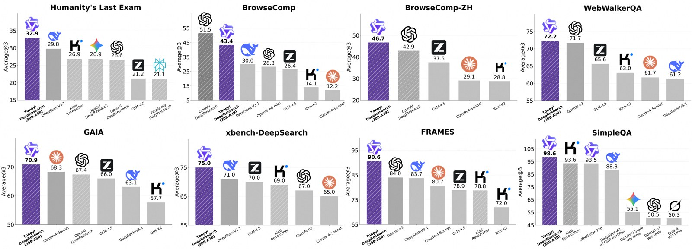
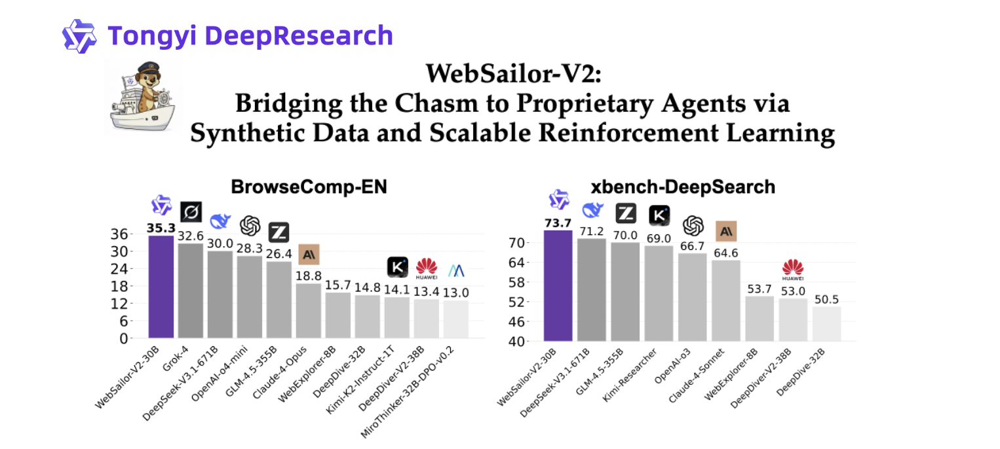
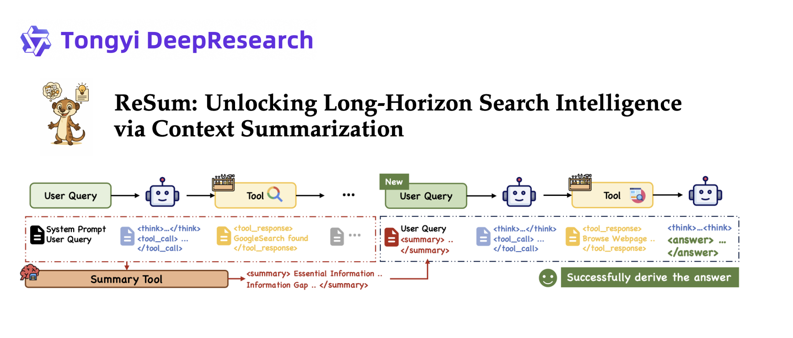
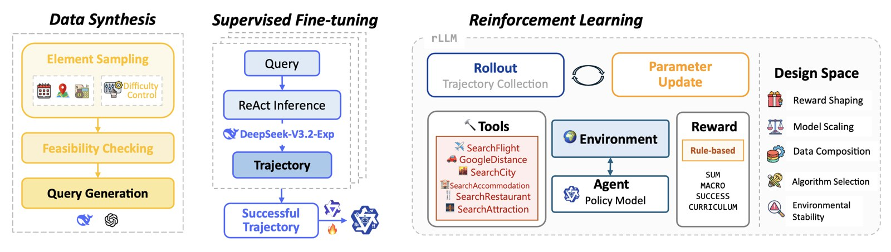
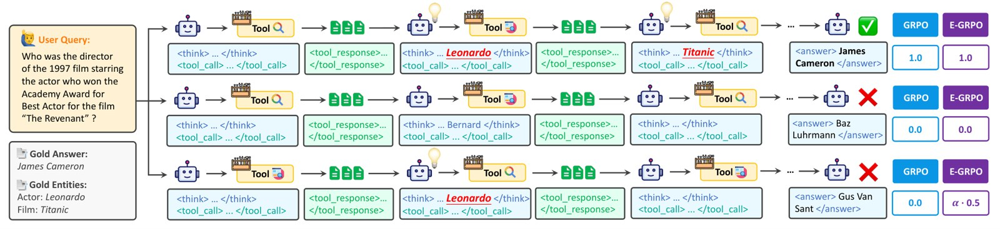
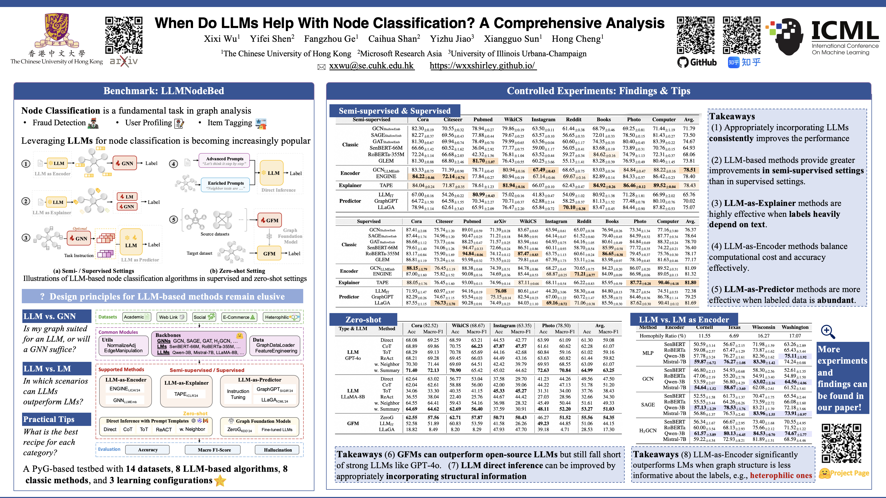
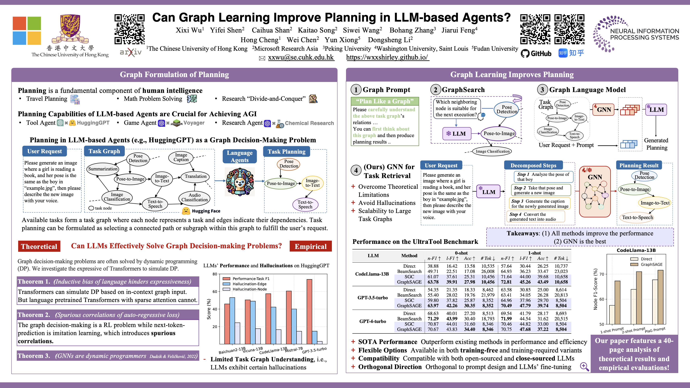
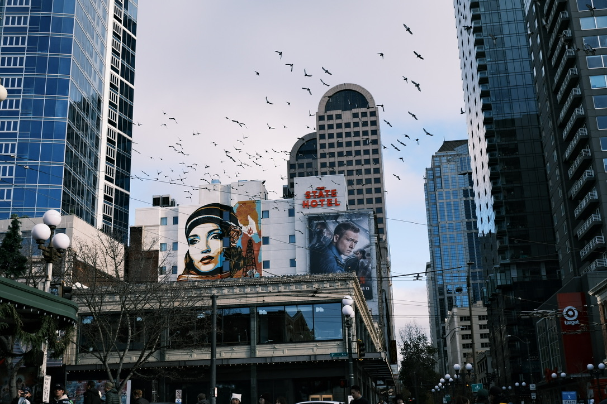
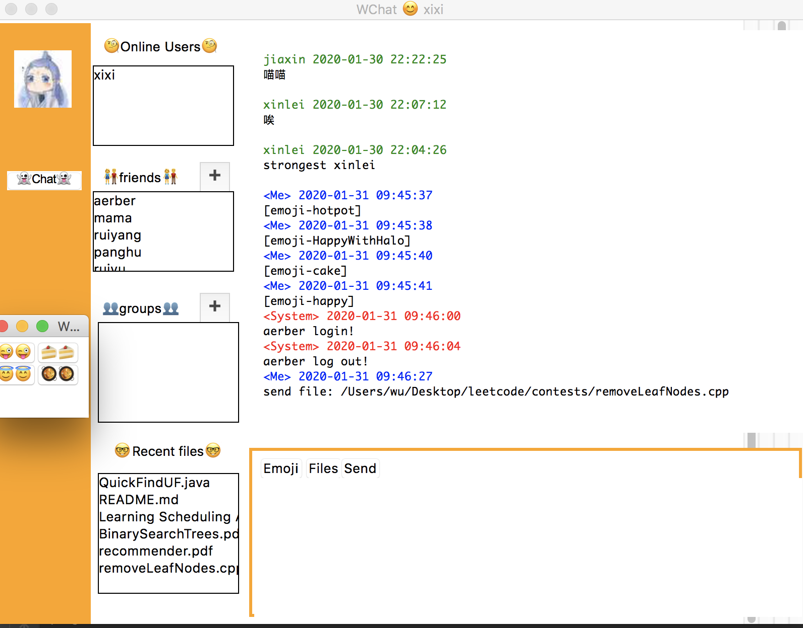

Ph.D. Candidate,
The Chinese University of Hong Kong
Student Researcher, Google
Email / GitHub / Google Scholar / Twitter / LinkedIn
Short Bio
I am currently a Ph.D. candidate at The Chinese University of Hong Kong, advised by Prof. Hong CHENG, and a Student Researcher at Google DeepMind.
Previously, I received my B.S. and M.S. in Computer Science from Fudan University in 2021 and 2024, respectively, under the supervision of Prof. Yun XIONG.
My research focuses on building autonomous agents for long-horizon reasoning, tool use, and self-evolution, with an emphasis on agentic post-training and reinforcement learning (currently at Google DeepMind, I am cooking Gemma 🧑🍳). Before working on language agents, I conducted research on graph learning, including community detection and recommendation.
Recent News
- [Aug 2026] Our paper Agent-STAR, a comprehensive RL recipe for long-horizon tool-using agents, was accepted to EMNLP'2026 Findings 🎉 [Code]
- [Jun 2026] I joined Google DeepMind as a Student Researcher 🚀
- [May 2026] I passed my Ph.D. Thesis Proposal Defense and am now officially a Ph.D. candidate 🎓
- [Feb 2026] Our paper BrowseConf was accepted to ACL'2026 Findings 🎉
- [Jan 2026] Our papers E-GRPO and WebSailor-V2 were accepted to ICLR'2026 ✨
- [Aug 2025] Our paper MoLoRAG was accepted to EMNLP'2025. See you in Suzhou ✨
- [May 2025] Our paper LLMNodeBed was accepted to ICML'2025. See you in Vancouver again 😄
- [Nov 2024] I was awarded NeurIPS'2024 Top Reviewer 🥳
Research Highlights
-

Tongyi DeepResearch: An Open-Source Deep Research Agent
Tongyi DeepResearch is an open-source agentic LLM for long-horizon, deep information-seeking tasks, trained through an end-to-end framework of agentic mid-training and post-training. Upon its release in September 2025, it matched flagship proprietary deep research systems across major benchmarks and has made a broad impact in the open-source community. I am a core contributor to the RL training implementation.
-

WebSailor: Super-human Reasoning for Web Agents
WebSailor equips web agents with super-human reasoning through a complete post-training pipeline: synthesizing high-uncertainty tasks via structured sampling and information obfuscation, followed by RFT cold start and agentic RL. It significantly outperforms open-source agents to match proprietary systems, with WebSailor-V2 (ICLR'2026) further scaling up the data and RL pipeline.

-

ReSum: Context Summarization for Long-Horizon Reasoning
ReSum studies the use of periodic context summarization to support longer reasoning processes in language systems. It is designed as a lightweight extension with minimal changes to existing ReAct workflows, and shows improved performance on challenging information-seeking benchmarks like BrowseComp and GAIA.
~150 Citations · Cited by Kimi-K2.5 & LongCat-Flash-Thinking Technical Reports
-

Agent-STAR: RL Recipe for Long-Horizon Tool-Using Agents (EMNLP'2026)
Using TravelPlanner as a testbed, we build the STAR post-training pipeline to systematically study 5 RL design axes: reward shaping, model scaling, data composition, algorithm selection, and environmental stability. We distill 7 practical takeaways, such as showing that optimal reward and exploration strategies are scale-dependent. Guided by this recipe, our 7B agent achieves a 62.8% success rate, far outperforming GPT-5.
-

E-GRPO: Reward Shaping for Search Agents (ICLR'2026)
Outcome-only rewards cannot distinguish informative "near-miss" trajectories from complete failures. E-GRPO repurposes the entities in synthetic data into a dense, entity-aware reward that credits near-misses, consistently outperforming GRPO with fewer tool calls.

-

LLMNodeBed: Benchmarking LLMs for Node Classification (ICML'2025)
We introduce LLMNodeBed, a PyG-based testbed for LLM-based node classification algorithms. It integrates 14 datasets, supports 8 LLM-based and 8 classic methods, and covers 3 learning configurations. With LLMNodeBed, we train and evaluate over 2,700 models to analyze the effects of factors like LLM type and size, prompt, learning paradigm, and dataset homophily. Our study reveals 8 key insights, including (1) optimal settings for each algorithm category, and (2) scenarios where LLMs significantly outperform LMs.
-

Graph Learning for Task Planning (NeurIPS'2024)
In language agents, available tasks naturally form a task graph, where nodes represent tasks and edges denote dependencies. Under such context, task planning involves selecting a path within this graph to fulfill user requests. We find that the bottleneck in LLMs' planning abilities lies in their limited understanding of the task graph. Therefore, we introduce GNNs as a simple fix, available in both training-free and training-required variants. Extensive experiments demonstrate that GNN-based methods surpass existing solutions even without training.


Selected Publications
-
ReSum: Unlocking Long-Horizon Search Intelligence via Context Summarization
Xixi Wu*, Kuan Li*, Yida Zhao, Liwen Zhang, Litu Ou, Huifeng Yin, Zhongwang Zhang, Xinmiao Yu, Dingchu Zhang, Yong Jiang, Pengjun Xie, Fei Huang, Minhao Cheng, Shuai Wang, Hong Cheng, and Jingren Zhou
arXiv preprint, 2025. ~150 Citations, Cited by Kimi-K2.5 & LongCat-Flash-Thinking Technical Reports
-
Demystifying Reinforcement Learning for Long-Horizon Tool-Using Agents: A Comprehensive Recipe
Xixi Wu, Qianguo Sun, Ruiyang Zhang, Chao Song, Junlong Wu, Yiyan Qi, and Hong Cheng
Findings of the Conference on Empirical Methods in Natural Language Processing (EMNLP), 2026
-
Tongyi DeepResearch Technical Report
Tongyi DeepResearch Team (Xixi Wu is a core contributor, responsible for the RL training implementation)
arXiv preprint, 2025. 200+ Citations
-
WebSailor: Navigating Super-human Reasoning for Web Agent
Kuan Li, Zhongwang Zhang, Huifeng Yin, Liwen Zhang, Litu Ou, Jialong Wu, Wenbiao Yin, Baixuan Li, Zhengwei Tao, Xinyu Wang, Weizhou Shen, Junkai Zhang, Dingchu Zhang, Xixi Wu, Yong Jiang, Ming Yan, Pengjun Xie, Fei Huang, and Jingren Zhou
arXiv preprint, 2025. HuggingFace Daily Paper Top-1 🏆, 300+ Citations (Extended version WebSailor-V2 accepted to ICLR'2026)
-
Repurposing Synthetic Data for Fine-grained Search Agent Supervision
Yida Zhao, Kuan Li, Xixi Wu, Liwen Zhang, Dingchu Zhang, Baixuan Li, Maojia Song, Zhuo Chen, Chenxi Wang, Xinyu Wang, Kewei Tu, Pengjun Xie, Fei Huang, Jingren Zhou, and Yong Jiang
Proceedings of the International Conference on Learning Representations (ICLR), 2026
-
BrowseConf: Confidence-Guided Test-Time Scaling for Web Agents
Litu Ou, Kuan Li, Huifeng Yin, Liwen Zhang, Zhongwang Zhang, Xixi Wu, Rui Ye, Zile Qiao, Pengjun Xie, Jingren Zhou, and Yong Jiang
Findings of the Association for Computational Linguistics (ACL), 2026
-
MoLoRAG: Bootstrapping Document Understanding via Multi-modal Logic-aware Retrieval
Xixi Wu, Yanchao Tan, Nan Hou, Ruiyang Zhang, and Hong Cheng
Proceedings of the Conference on Empirical Methods in Natural Language Processing (EMNLP), 2025
-
When Do LLMs Help With Node Classification? A Comprehensive Analysis
Xixi Wu, Yifei Shen, Fangzhou Ge, Caihua Shan, Yizhu Jiao, Xiangguo Sun, and Hong Cheng
Proceedings of the 42nd International Conference on Machine Learning (ICML), 2025
-
Can Graph Learning Improve Planning in LLM-based Agents?
Xixi Wu*, Yifei Shen*, Caihua Shan, Kaitao Song, Siwei Wang, Bohang Zhang, Jiarui Feng, Hong Cheng, Wei Chen, Yun Xiong, and Dongsheng Li
Proceedings of the 38th Conference on Neural Information Processing Systems (NeurIPS), 2024

-
ProCom: A Few-shot Targeted Community Detection Algorithm
Xixi Wu, Kaiyu Xiong, Yun Xiong, Xiaoxin He, Yao Zhang, Yizhu Jiao, and Jiawei Zhang
Proceedings of the 30th ACM SIGKDD Conference on Knowledge Discovery and Data Mining (KDD), 2024
-
ConsRec: Learning Consensus Behind Interactions for Group Recommendation
Xixi Wu, Yun Xiong, Yao Zhang, Yizhu Jiao, Jiawei Zhang, Yangyong Zhu, and Philip S. Yu
Proceedings of the ACM Web Conference (WWW), 2023
-
CLARE: A Semi-supervised Community Detection Algorithm
Xixi Wu, Yun Xiong, Yao Zhang, Yizhu Jiao, Caihua Shan, Yiheng Sun, Yangyong Zhu, and Philip S. Yu
Proceedings of the 28th ACM SIGKDD Conference on Knowledge Discovery and Data Mining (KDD), 2022
-
DDIPrompt: Drug-Drug Interaction Event Prediction based on Graph Prompt Learning
Yingying Wang, Yun Xiong, Xixi Wu, Xiangguo Sun, Jiawei Zhang, and Guangyong Zheng
Proceedings of the 33rd ACM International Conference on Information and Knowledge Management (CIKM), 2024
-
Towards Adaptive Neighborhood for Advancing Temporal Interaction Graph Modeling
Siwei Zhang, Xi Chen, Yun Xiong, Xixi Wu, Yao Zhang, Yongrui Fu, Yinglong Zhao, and Jiawei Zhang
Proceedings of the 30th ACM SIGKDD Conference on Knowledge Discovery and Data Mining (KDD), 2024
-
Dual Intents Graph Modeling for User-centric Group Discovery
Xixi Wu, Yun Xiong, Yao Zhang, Yizhu Jiao, and Jiawei Zhang
Proceedings of the 32nd ACM International Conference on Information and Knowledge Management (CIKM), 2023


Experience
-
Google DeepMind
Student Researcher Jun. 2026 - Present
Mountain View, CA, USA
-
Alibaba Group
Research Intern, Deep Research Team, Tongyi Lab Jun. 2025 - Oct. 2025
Hangzhou, China
-
Microsoft Research Asia
Research Intern, Shanghai AI/ML Group Feb. 2024 - Jun. 2024
Shanghai, China
Selected Awards
- ACM Web Conference Student Travel Award 2023
- Second Class Scholarship for Outstanding Student, Fudan University 2018 & 2021
- Second Prize of Undergraduate Mathematical Contest in Modeling, Shanghai, China (CUMCM) 2019
- First Prize in National Olympiad in Mathematics in Provinces, Jiangsu, China 2016
Professional Services
- Conference Reviewer: NeurIPS'2024 (Top Reviewer Award🏆) - 2026, ICLR'2025 - 2026, ICML'2025 - 2026, WWW'2024 Graph Foundation Model (GFM) Workshop, SIGKDD'2024 - 2025, AAAI 2026
- Journal Reviewer: IEEE Transactions on Knowledge and Data Engineering (TKDE), Transactions on Machine Learning Research (TMLR)
Miscellaneous
- Goal for this year: run a half marathon! Let's see 💨
- I enjoy swimming 🏊, running 🏃, and cooking Chinese food 🍳
- I love traveling and exploring new trails; Yangmingshan in Taipei is my favorite hike so far 🏔️
Kyoto
Yangmingshan

Seattle
Mt. Fuji
Hong Kong
Kaohsiung
- Curiosity keeps me moving, both in research and in life ✨
-
[Show my undergrad app projects]
During my undergraduate studies, I was interested in mobile app development (you can find all the source code on my GitHub):
Lose Weight, a Flutter App
Hulv, a Mini-Program

Chatroom, a Desktop App